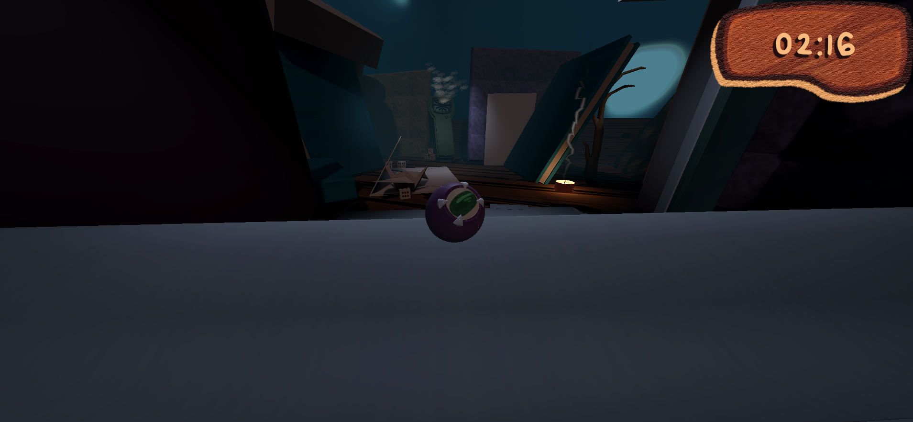
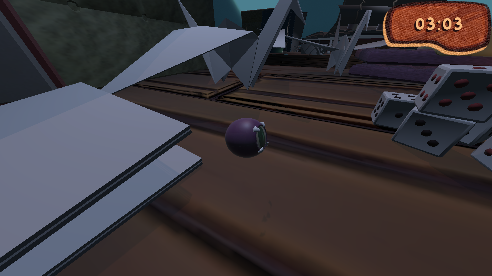
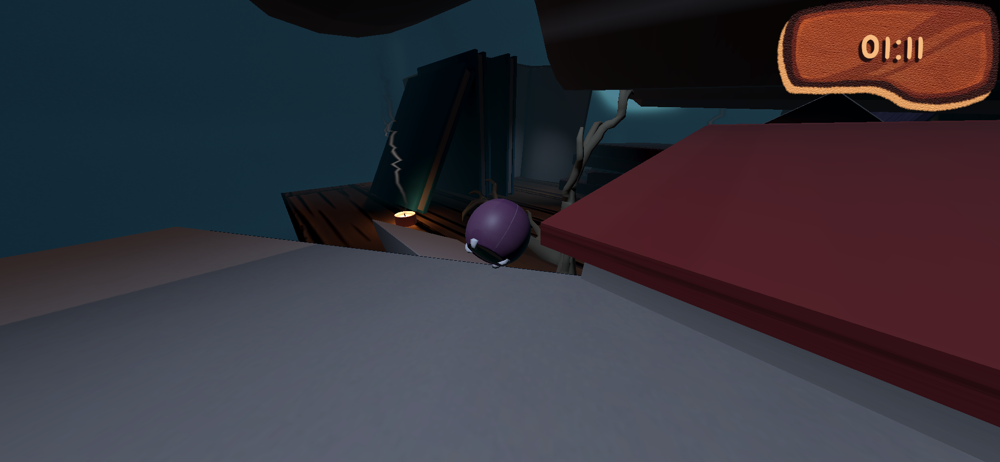
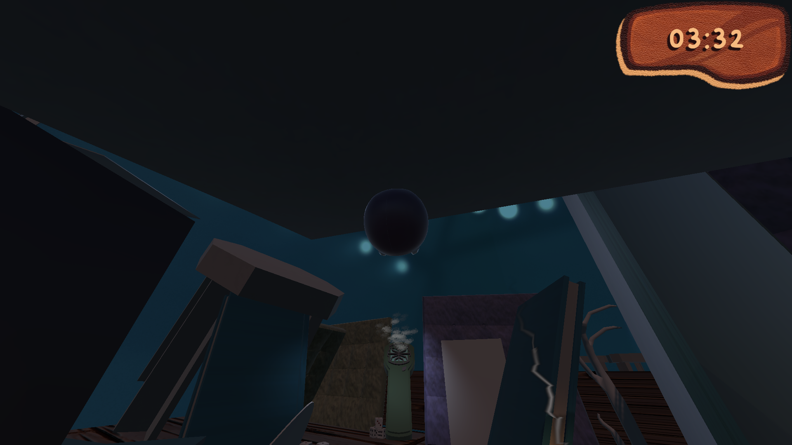
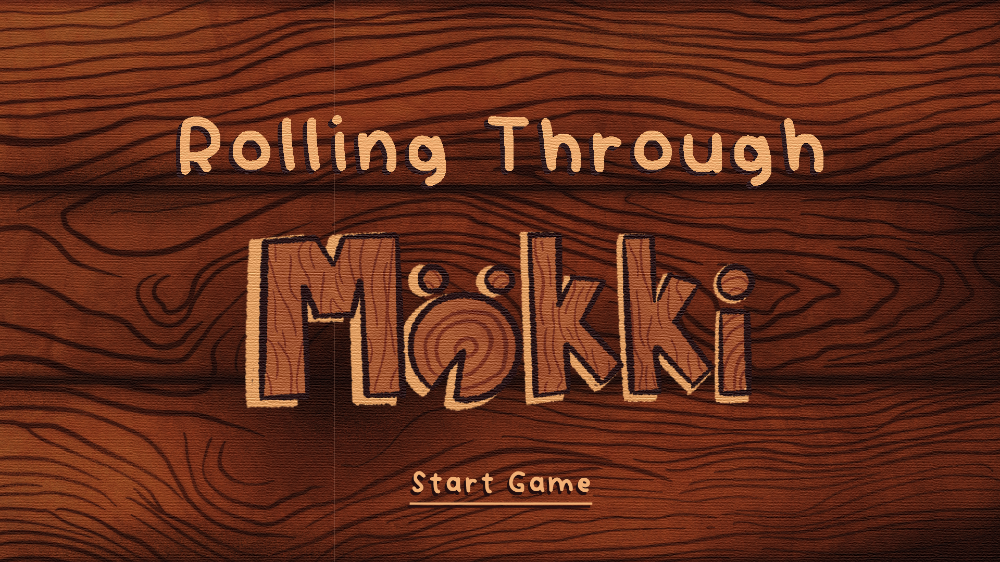
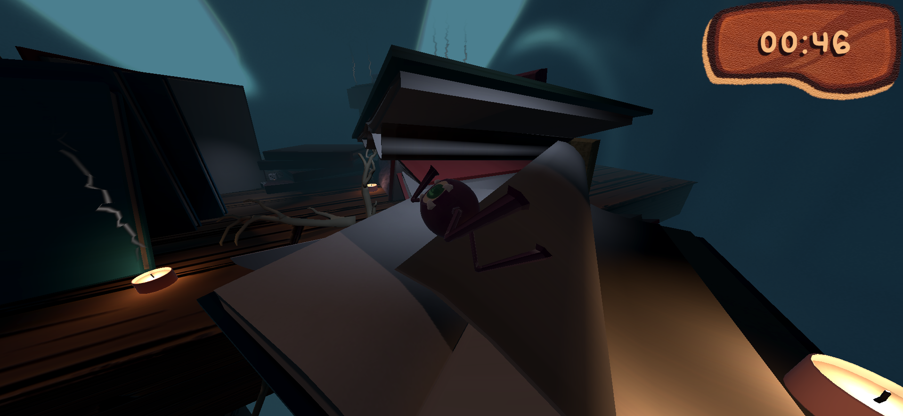

Rolling Through Mökki







Overview
This project was done online in a very international team of 7 people, across multiple timezones, for a GamesNow Jam organised by Aalto University in Finland. The premise is you're a little insectoid creature trying to escape a cottage before the bug smoke kills you.
It's basically a time-limit platformer with a dark atmospheric world of cottage clutter. The mechanics include rolling around, switching gravity up and down, switching camera tilt up and down as well, and restarting at candle checkpoints. The game was made in approximately 10 days.
Role and Contributions
3D Artist, Game Designer, and Level Designer. My contributions for the game included being an active part of the brainstorming and conceptual phase. I took part in all the voice call meetings and worked closely with the programmer to help the art team with technical aspects of Unity.
I was the main level designer and main 3D artist, creating most of the clutter objects and some textures. I created the main level of the game, which players have a time limit of 4 minutes to complete.
Engine and Tools
Unity, Github, Gimp, Blender, Miro, Trello